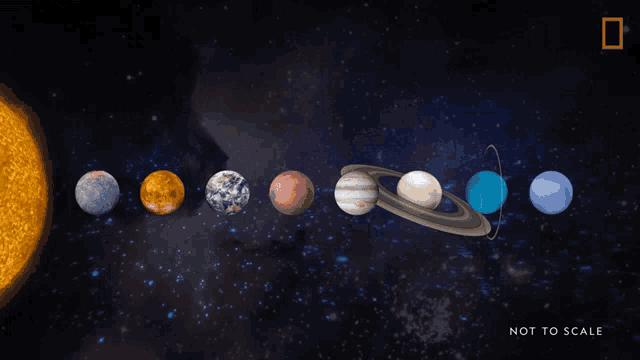
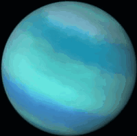

Hi! I am Hasan and welcome to my Planets webpage! This site is dedicated to provide you with insightful information about four unique planets within our solar system.
Our Solar System
Starting from the left: Sun, Mercury, Venus, Earth, Mars, Jupiter, Saturn, Uranus and finally Neptune.
Below we have a table highlighting some key features of four planets from the solar system - Jupiter, Saturn, Uranus and Neptune.
| Planet | Mass (10^24 kg) | Diameter (km) | Escape Velocity (km/s) | Orbital Period (days) | Mean Temperature (°C) | Number of Moons | Ring System |
|---|---|---|---|---|---|---|---|
| Jupiter | 1898 | 142,984 | 59.5 | 4,331 | -110 | 95 | Yes |
| Saturn | 568 | 120,536 | 35.5 | 10,747 | -140 | 83 | Yes |
| Uranus | 86.8 | 51,118 | 21.3 | 30,589 | -195 | 27 | Yes |
| Neptune | 102 | 49,528 | 23.5 | 59,800 | -200 | 14 | Yes |
Jupiter
Saturn

Uranus
Neptune
- ✓ Mass (10^24 kg): roughly equivalent to the mass of the Earth, which is approximately 5.972 × 10^24 kilograms; essentially, it represents a very large mass on the scale of planets.
- ✓ Diameter (km): the distance across a planet, measured from one side to the other through its center, expressed in kilometers (km).
- ✓ Escape Velocity (km/s): the minimum speed an object needs to be traveling to completely break free from the planet's gravitational pull and escape into space, measured in kilometers per second (km/s).
- ✓ Orbital Period (days): the amount of time it takes for that planet to complete one full orbit around the Sun, measured in Earth days.
- ✓ Mean Temperature (°C): the average temperature across the entire surface of a planet.
- ✓ Number of Moons: Number of moons.
- ✓ Ring system: Do they have rings or not?
If you want to learn more about the solar system or any of these four planets further, please click their respective names below:
- ✓ The Solar System
- ✓ Jupiter
- ✓ Saturn
- ✓ Uranus
- ✓ Neptune